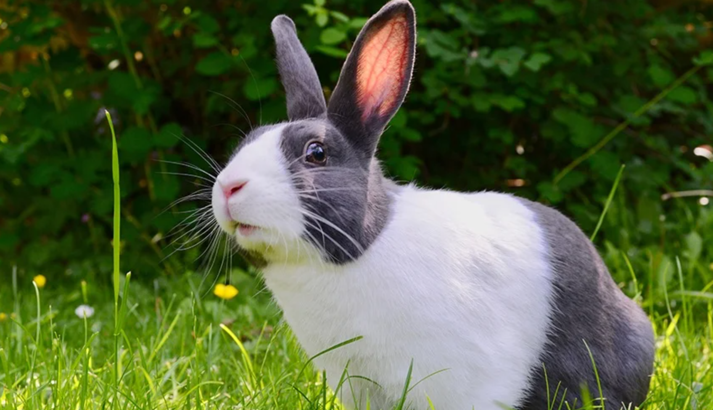

더치
|  |
더치 토끼의 가장 큰 특징은 판다를 연상시킨다는 것이다. 판다처럼 몸통의 흰 앞부분과 뒷부분털색이 확인히 구분된다. 얼굴은 알파벳 V자를 거꾸로 한 모양으로 털이 나 있다. 본래 더치의 털색은 읜색과 검은색으로 되어 있었지만, 지금은 갈색, 회색 등 다양하다. |
드워프
|
더치 토끼의 가장 큰 특징은 판다를 연상시킨다는 것이다. 판다처럼 몸통의 흰 앞부분과 뒷부분털색이 확인히 구분된다. 얼굴은 알파벳 V자를 거꾸로 한 모양으로 털이 나 있다. 본래 더치의 털색은 읜색과 검은색으로 되어 있었지만, 지금은 갈색, 회색 등 다양하다. |
라이언헤드
|
더치 토끼의 가장 큰 특징은 판다를 연상시킨다는 것이다. 판다처럼 몸통의 흰 앞부분과 뒷부분털색이 확인히 구분된다. 얼굴은 알파벳 V자를 거꾸로 한 모양으로 털이 나 있다. 본래 더치의 털색은 읜색과 검은색으로 되어 있었지만, 지금은 갈색, 회색 등 다양하다. |
롭이어
|
더치 토끼의 가장 큰 특징은 판다를 연상시킨다는 것이다. 판다처럼 몸통의 흰 앞부분과 뒷부분털색이 확인히 구분된다. 얼굴은 알파벳 V자를 거꾸로 한 모양으로 털이 나 있다. 본래 더치의 털색은 읜색과 검은색으로 되어 있었지만, 지금은 갈색, 회색 등 다양하다. |